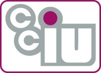
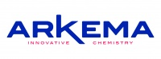
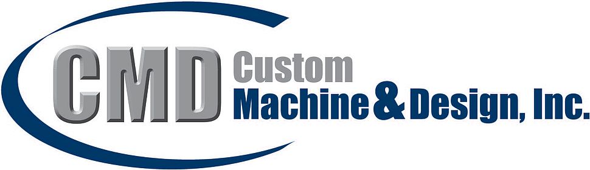

Sponsors
 

Ira Binder - Attorney at Law
The Featherman Family
In Kind Donations


Now that competition season is over, FRC and FTC are currently on off-season schedules. This allows time to focus on things such as projects, learning, and outreach.
FRC Team 1640 had a good 2015-2016 season. With DEWBOT XII, the team ended up 3rd seed and finalist at Seneca as well as 3rd seed and champion at Westtown, the first FRC event 1640 has co-hosted with team 1391 Metal Moose. The team made it to eliminations at both MAR and the FIRST World Championship. Throughout the season, 1640 earned three engineering awards.
FTC Team 7314 had a phenomenal 2015-2016 season, winning the South Central PA Qualifying Tournament. This meant the team made it past qualifiers for the first time. Team 7314 was also champion at the PA Championship. The team did well in the East Super-Regional Championship Tournament. 7314 went on to do well as the only PA FTC team at the FIRST World Championship. The team also received two engineering awards during the season and were finalists at the Eastern Pennsylvania Qualifying tournament.
Contact us at FRC1640@gmail.com - FRC 1640 is currently meeting Wednesday evenings 6:00-9:00pm; FTC 7314 is meeting Mondays 6:30-8:30pm; all at the CCIU TCHS Brandywine Campus, 443 Boot Road, Downingtown PA.
FRC Team 1640 was founded with 12 students in 2005 by Downingtown East High School physics teacher Paul Sabatino. Prior to joining the Downingtown East faculty, Mr. Sabatino mentored FRC Team 104 in the West Chester School District.
The team's name is Sab-BOT-age, in honor of Paul Sabatino's vital contributions.
The FRC 1640 team now encompasses thirty five students from throughout Chester County and more than a dozen mentors. While the organization has expanded its scope to include a FIRST Tech Challenge team and hosts two FIRST LEGO League events annually, FRC 1640 remains solidly the core of Downingtown Area Robotic (DAR).
Before the 2013 Block Party season, FTC Team 7314 Sab-BOT-age was founded to give 7th and 8th graders an opportunity to participate in FIRST and robotics.
FTC has quickly expanded in many areas including outreach, team size, performance, and more! This past season saw almost 15 students make it to the FIRST World Championship in St. Louis, Missouri. 7314 was the only Pennsylvania team to do so! FTC has joined and helped FRC 1640 in a number of outreach events including demos, scrimmages, and the Sab-BOT-age hosted FLL events.